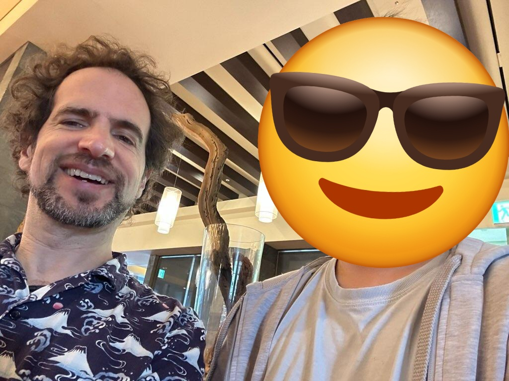
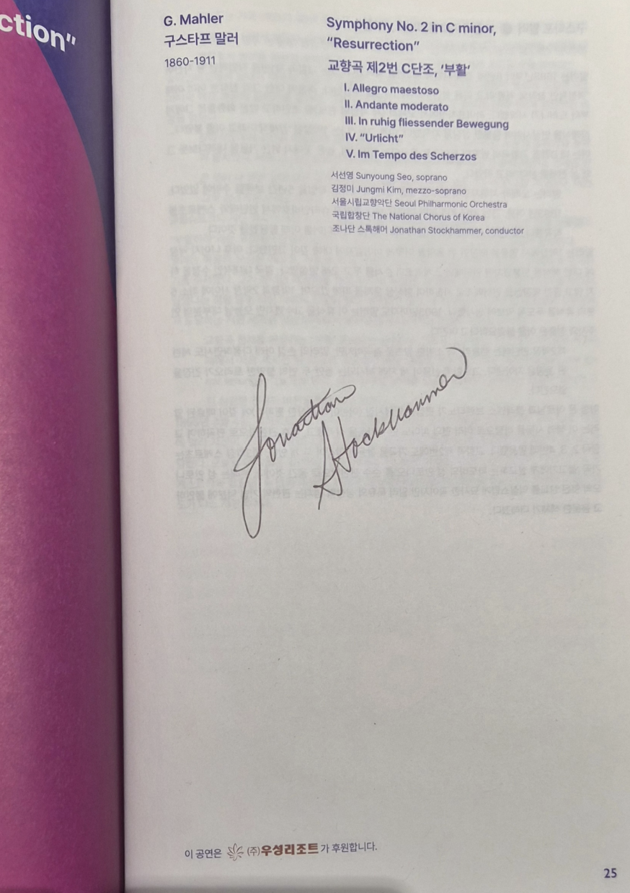

Breakfast with a Mahlerian


The concert was over, but another event happened the next day while I was eating breakfast at the hotel. I saw the conductor eating alone a few tables away from me. I saw a few other people approach him and have small talk (assuming they were the audience from yesterday). I also really wanted to talk to him, but I felt nervous and couldn't approach him easily — but finally I did.
I introduced myself and first thanked him for a wonderful performance yesterday, and told him everything I felt: how I was crying since the third movement and how the finale was astonishing. After a few minutes, we found out that we were both huge fans of Mahler. And I even tried a joke that only real Mahler fans could make — I told him that he had a hammer in his name, like the Sixth Symphony, "Tragic," which involves hammer strikes during the fourth movement. I never knew I would ever be able to talk with someone, joking about Mahler's hammer in his Sixth Symphony, especially to a conductor.
He asked me a question regarding the Adagietto movement, and I answered because I knew about the "Ich bin der Welt abhanden gekommen" from the Rückert-Lieder and how the motif is used in the Adagietto. He was very surprised, and I was proud since this was some very niche topic even within Mahler. Then he started telling me about his childhood experience. About my age, he said he traveled all by himself on the train to probably New York. He went there to listen to Bernstein play Mahler's Third Symphony. I think he said that he didn't even have a ticket — he just went and asked and waited, and he got a ticket to watch Bernstein play Mahler live.
I was just too jealous of him. Bernstein was a true Mahlerian who even believed that he was Mahler himself; he left numerous legendary recordings and is the one who actually started the "Mahler boom" worldwide. I was just so surprised to see him do the exact thing I was doing now. For Mahler, he could do everything — same as me. I just want to thank him again for sharing this wonderful experience with me. I could feel his joy talking about Mahler, and that is probably the best moment I had listening to classical music and Mahler. Since he had a childhood of listening to Mahler and appreciating his music, I could feel that he knew how this moment — of me meeting a conductor playing Mahler — was also so important.
Of course, we took pictures together and got his great signature on the program book, right next to Mahler's name. He even recommended new pieces, more modern pieces that actually reference Mahler's symphonies a lot. I am just so thankful that we could spend almost an hour at the breakfast place.